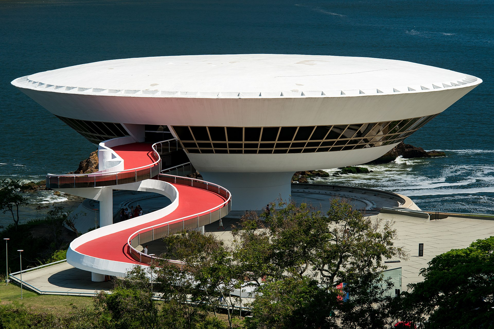
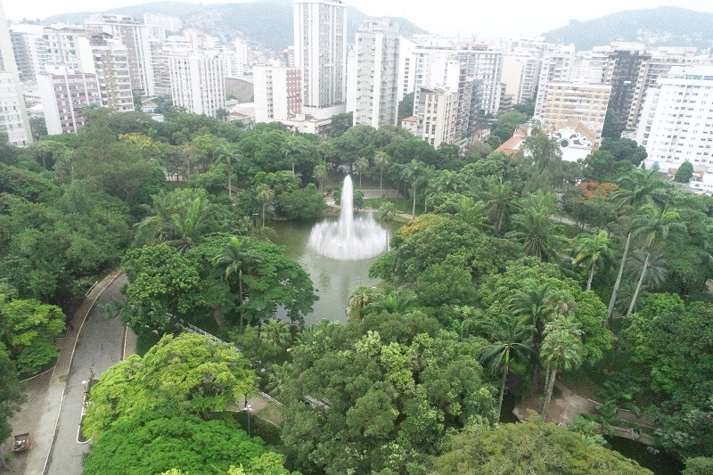
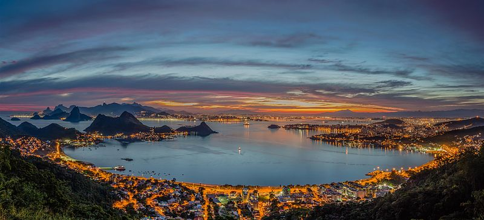
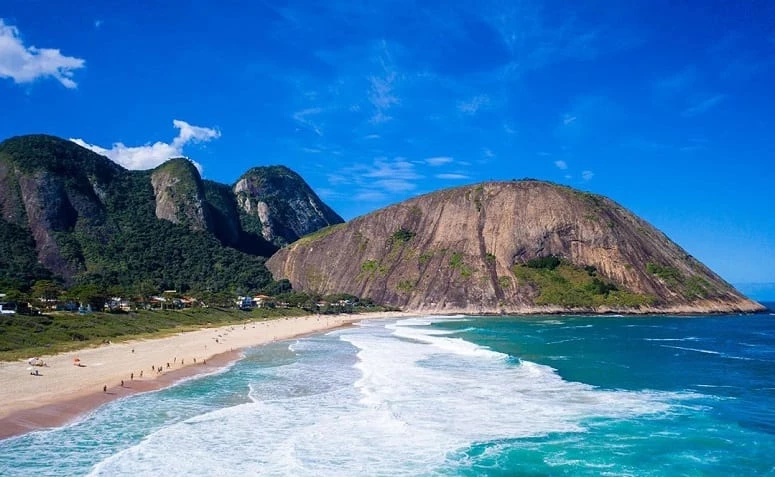
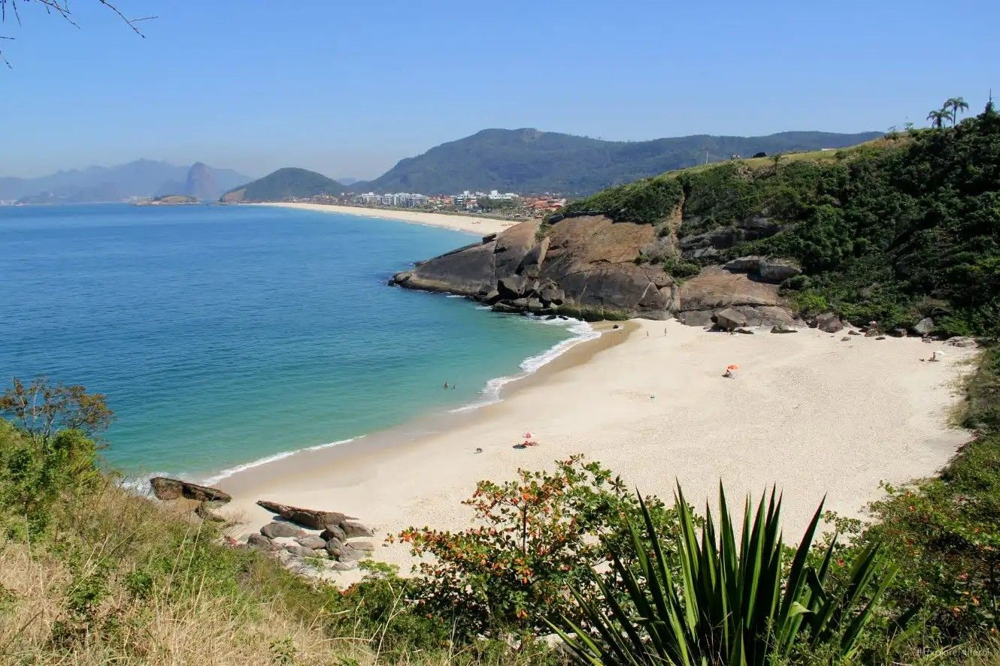

.png)
Turismo em Niterói
Museu de Arte Contemporânea-MAC
O Museu de Arte Contemporânea (MAC), inaugurado em 2 de setembro de 1996, é o atual símbolo da cidade de Niterói. A forma futurista criada por Niemeyer tornou-se um marco da arquitetura moderna mundial, sendo considerada uma das sete maravilhas do Mundo em museus pela mídia especializada.
A forma do MAC lembra uma flor, ou uma nave espacial, flutuando sobre uma pedra que avança para o mar. Construído com um espelho d’água ao seu redor, ele ganha ainda mais leveza, e sua grande rampa externa de concreto, com piso vermelho, conduz o visitante aos pavimentos superiores do Museu, com vista panorâmica de 360 graus para a Baía de Guanabara e as cidades do Rio de Janeiro e de Niterói. O MAC abriga a Coleção João Sattamini, uma das mais importantes coleções de arte contemporânea do país.
Campo de São Bento
A área do Parque Prefeito Ferraz, nome oficial do Campo de São Bento, integrava um imenso território que, em meados do século XVII, pertenceu aos monges beneditinos. Em 1908 foi finalmente urbanizado segundo projeto do engenheiro paisagista belga Arséne Puttemans.
Principal jardim público de Niterói com cerca de 36 mil metros quadrados, situa-se no coração do bairro de Icaraí, zona sul da cidade. Abriga um pequeno parque de diversões e, nos finais de semana, uma grande feira de artesanato. Nele, funcionam o Grupo Escolar Joaquim Távora, o Centro Cultural Paschoal Carlos Magno e o Jardim de Infância Júlia Cortines. Oferece inúmeras atrações, como retreta, encontros do Clube do Curió, exposições, lançamentos de livros, shows, cursos e apresentação de filmes e vídeos.
Parque da Cidade
É uma área de preservação ambiental (APA) do município, localizado no alto do morro da Viração, numa altitude de 270 m, ocupando uma área de 149.388,90 m². Inaugurado em 1976, possui um mirante com uma visão panorâmica única das Lagunas, Praias Oceânicas, bairros de Niterói, Baía de Guanabara em toda a sua extensão e do mar aberto até onde a vista consegue alcançar. Avista-se também a cidade do Rio de Janeiro com alguns de seus bairros e a Ponte Rio – Niterói.
Sua vista panorâmica teve pontuação máxima no Guia Verde Michelin. O Parque conta com duas rampas para a prática de vôo livre, sendo muito frequentado pelos praticantes desse esporte.
Praia de Itacoatiara
Possuindo 700m de extensão e sendo considerada uma das melhores praias da cidade, seu nome significa em Tupi ”pedra escrita, riscada ou que tem inscrição”. Em meio a uma vegetação exuberante, suas águas são transparentes e azuladas. Paraíso dos surfistas, é pequena e uma das mais frequentadas pela juventude, além de oferecer uma rica paisagem. No recanto direito, fica a ”Prainha”, paraíso para as crianças, uma pequeníssima praia protegida das ondas e que apresenta na maior parte do tempo águas calmas.
Praia de Camboinhas
Com 2.600m de extensão, suas águas são transparentes e esverdeadas. Com areias claras e finas, é uma extensão da Praia de Itaipu e um recanto pitoresco muito procurado pelos amantes da pesca de arremesso, pelos velejadores e pelos wind-surfistas. Sua orla é repleta de quiosques especializados em frutos do mar, servidos à beira-mar. Seu nome reporta-se ao encalhe de um navio com o mesmo nome. Ficando entre a praia e a lagoa de Itaipu, existe também no local o sofisticado bairro residencial de Camboinhas.